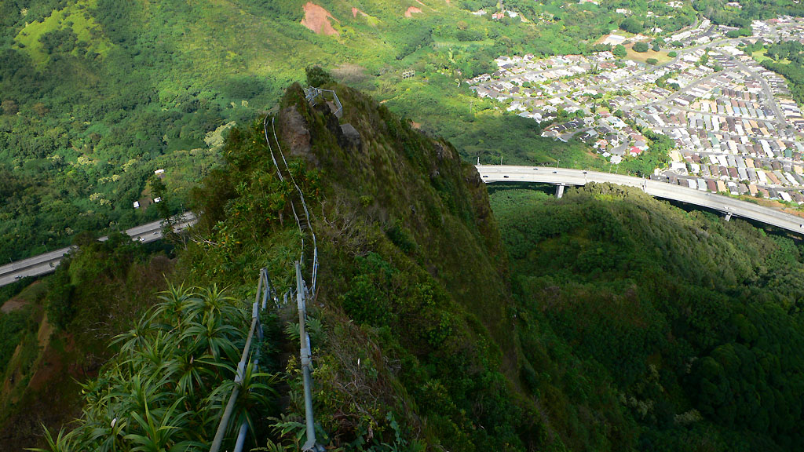
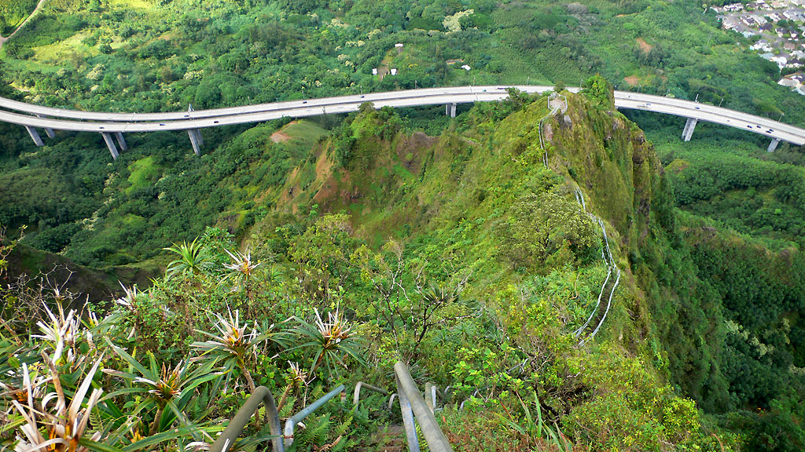
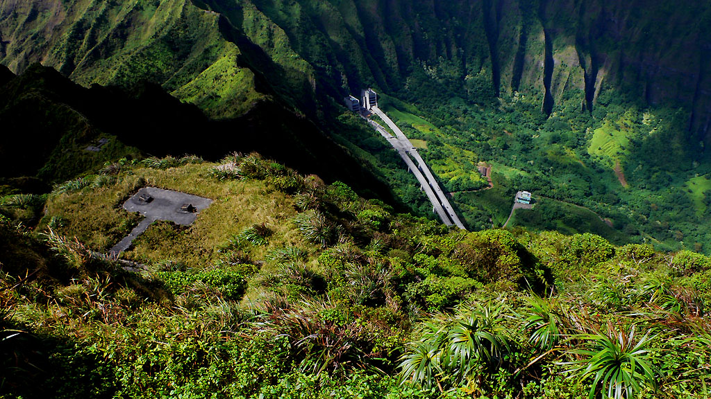
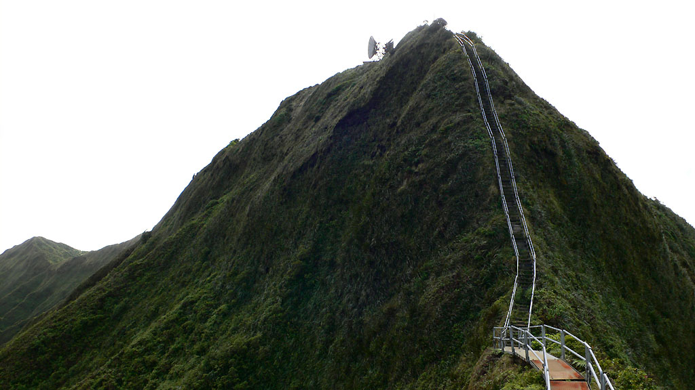
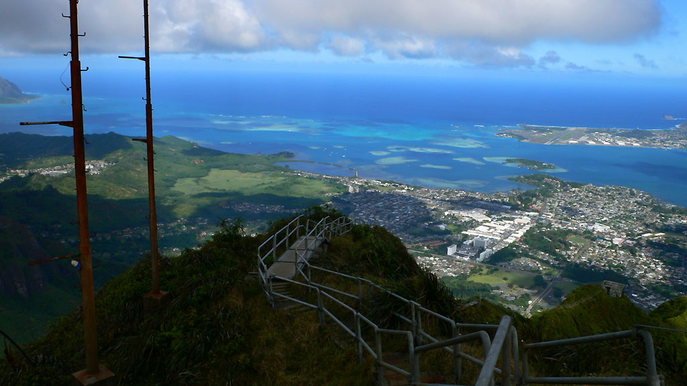

The Haiku Stairs
An unusual trail on Oahu
I really wanted to climb the Haiku Stairs, aka the “Stairway to Heaven”. I like unusual mountain ascents, and this one qualifies. A 2000 foot high segmented steel ladder leads up a wall of the “Jurassic-Park-esque” basin above the H3 freeway. It was built during WWII to service the Haiku Radio Station, a secret wartime listening post on the summit of Puu Keahiakahoe. First built of wooden ladders, and metallized in 1956, the stairs provide a fascinating glimpse into a forbidden world. The steep vegetated walls could never admit of a trail, and an attempt to build one on the ridge would be an ecological disaster, because erosion would soon turn it into a harrowing smooth mud gully. Despite completing plenty of steep rock climbs in my time, I couldn’t imagine ascending the crumbly volcanic walls in a technical style. Nope, the stairs were the only way.
And they were illegal.
Once the stairs were a popular hike, even featured in a “Magnum P.I.” episode in 1981. But after a renovation in 2002, homeowners below the ridge suffered when lazy hikers parked in their driveways and blocked them in. Now inconsolably angered, they are blocking any plan to reopen the hike. An abandoned access road at the base would allow a reasonable approach from 1.5 miles away, where a parking lot could be built. The homeowners would never see a hiker again! But that isn’t enough for them. In fact, the new proposal is to rip the steps off from the ridge, thus “solving” everyone’s problem. What a shame.
The renovation of the steps in 2002 cost almost a million dollars. Since then, I’ve hoped to climb the steps on every visit to Hawaii, but as talk moved from a glorious reopening, to a long stalemate, and finally to talk of destroying the trail, my patience has worn out. I’m going to hike them even if I get in trouble.
But the forces arrayed against me are formidable. I’d been told that a full time security guard is posted at the main gate (I’ll call this Access Point 1). People have been cited and arrested. The neighborhood is angry at the general publics continuing defiance of their wishes, and I imagined there was more than one old lady keeping a close eye out her garden window. Plus, the stairs climb in full view of the H3 freeway for several hundred feet. Fences, guards, dogs, and motivated people with cell phones were my primary obstacles.
Kris’s dad was cautiously supportive of my plan. He and I pored over satillite photos and Hawaii State property maps, trying to find the best way in. He had hiked in from a place I’ll call Access Point 2 several years before. He suggested I try there, as there was merely a rope across a dirt road to prevent access. We speculated about other options, but it didn’t look good. For example, a westerly approach leads through a high security mental health facility. I didn’t fancy trying that way. It’s a real bear of a problem!
I couldn’t risk anyone in the family getting in trouble too, so I would go alone. Also, I wouldn’t use a car. My impression is that the first reason for the neighborhood becoming angry was parked cars, so I would respect them and walk in. I would be mad too if I were them. Where I break with those people, is in their unwillingness to consider any solution. So I didn’t know if walking would give me moral points, or just make me an easier target to catch.
But home was 7 miles away, so Kris’s dad found a bike in the garage. We pumped up the tires and sent me off. I took no identification or cell phone. I kept the memory card out of my camera and hidden elsewhere on my body. “Goodbye family,” I said. “I’ll either see you at Aunty Karen’s house for a late lunch, or I’ll call you from jail.”
The overland trip could have been better. The shifters on the bike failed spectacularly. Any attempt to change gears led to a jammed mess. Going over a pass near Kaneohe, I finally had to walk the bike. Or I would try standing on the pedals for more momentum, but the chain would slip repeatedly until my heart was permanently lodged in my throat. Eventually I learned how to shift reliably. The procedure was to stop the bike, turn it over and manually put the chain on the spokes that I wanted. Easy peasy!
I entered the neighborhood for Access Point 2. The road steepened, and I walked the bike. My heart was pounding as I expected a confrontation at any minute! This was scary.
Trying to look innocent, I found the side-street with the rope across the road. I was glad it would be easy to get in, because the neighborhood was full of people! 5 men worked on a boat, and old ladies watered plants. Young mothers drove by and dropped off kids, looking at me curiously.
Vast disappointment greeted me. The rope had morphed into a 15 foot high fence, which went from the wall of one house to the wall of the other. Angry red signs promised retribution. I could sense the men on the boat watching me watching the fence. I hurried by. A block to the west provided another chance, according to my satillite imagery.
But it was a repeat of the first experience. No, Access Point 2 was permanently closed. An angry weal, a primal “No!” delivered by the people around me. I hopped on the bike and coasted back down the hill.
Again, I had no enthusaism for the mental hospital, so I remembered the blue line of a creek that went from the highway up to the mountain. If I could follow the creekbed up, then I wouldn’t disturb the tranquility of any neighborhood with my passage. So I made my way back down to the flats, and into the creek from a park, to Access Point 3.
Hiding the bike in the 15 foot high reeds, I had no choice but to wade into the stagnant creek to stay between the fences of homes on either side. Gatorade bottles and small dark fish kept me company as I slithered under brambles and pulled my way along on roots. The water was cool in the humid jungle, though soon the brush thickened to ridiculous levels. My legs started to burn because of dozens of “paper cuts” delivered by serrated leaves. How much can I take? I gave myself 10 minutes to reach a tree about 50 yards away. 15 minutes later, after all kinds of creative moves I still wasn’t there, though my arms and legs were stinging and tattered. I conceded defeat. Going back was only slightly easier.
“That was a costly hour,” I thought, squelching back to my bike. These stairs are well guarded by dragons. Rather than brave the mental hospital, I decided to go right to the dragon’s mouth: Access Point 1. I had read that it cost the city 1,500 dollars per week to maintain a 24 hour guard, and that was more than a year ago. Maybe the guard is gone, or maybe I could sneak around him. Emboldened by desperation, I pedalled back into the neighborhood.
But I’d discovered a new property of my bicycle. Sometimes turning the handlebars isn’t enough to make the wheel turn. Oh the handlebars will turn all right, but the wheel does what it wants to. “Great,” I said aloud. 2 young women did a double take when I pedaled by, my handlebars indicating a sharp right turn, but the wheel pointing straight ahead. I feigned nonchalance, covered as I was in angry red slashes, and dripping water from muddy brown shoes and socks.
Again my heart pounded. What would I see at the access point? This area of the neighborhood was less busy, but I still felt watched. I reached the spot, to find a gate with more red signs. No guard though, and no vehicles either. I stashed the bike, locking it with trembling fingers while nervously humming “Here Comes the Sun.” Standing innocently in front of the gate, I saw a dirty gully from the corner of my eye, that led up a hillside to get around the fence. Holding my breath with suspense, I scrambled up the root ladder, and across some corrugated steel to get in. Down the other side, and then a mad dash up the road, fearing that a guard would heave into view as I crested the small hill. I was in!
Yes! I walked along the road, expecting to follow my nose from here. There are no instructions published anywhere, and I’m not going to be the first. I’ll merely say it can be done. Turning off the road on a worn trail, I continued into a mysterious bamboo forest where the trail became a tunnel. I emerged on the abandoned access road, and soon found the trailhead.
It was very sad. It had clearly been updated in recent years to have a 3-d computer topo of the mountainside, with very nice graphics and advise to allow people to pass you without stepping on vegetation. As if all the previous obstacles weren’t enough, another 20 foot high fence blocked the first steps on the trail itself. “Sigh,” I sighed, easily passing around it.
The stairs were very solid, 7 steps to a segment, with 2 railings and 4 foot long spikes anchoring them into the mountain. I read that there are almost 4000 steps. Trying not to go too fast, I was impressed by the intimate glimpse I was getting into a tropical mountainside ecosystem. I reached the level of the highway, and studiously kept my movements to a minimum. Apparently in the past, rescue attempts had been mounted when someone just waved to cars for fun. I reached a very steep section, and felt myself holding on tightly as the ladders approached vertical. I laughed because someone had written “Mommy!” on a ladder rung at just the right spot to echo my own thinking. What a card!
Above the steep step, which featured vertigo-inducing glimpses of crumbly black cliffs on either side, I paused for a breather and to take some pictures. Hopefully I was higher up than most people would look from their cars. Imagine my surprise when I heard banging and squeaking behind me! Two young fellas were coming down, and we looked at each other in stunned silence. “Hi!” I finally said. They passed by, fellow travellers on a dubious road.
But the view was amazing! The ridges were a rich, sculpted green. Vast basins of empty space dominated on either side of me. How wonderful to be able to visit here. And I was very pleased to be making no real environmental impact. I had no opportunities to cause erosion, locked as I was into the ladder. There was no room to step outside of it without risking a deadly fall. What a unique perspective I was getting on the island and on an ecosystem. Kaneohe Bay looked beautiful, and the extensive neighborhoods of the town began to seem very small. Never was it brought home to me more effectively how precious the natural resources on the island are, and how seriously we need to take conserving them. And how seriously we need to plan for growth that minimizes impact. Also, it really struck me that on such a small island, we have “interstate” freeways, daily traffic jams and tunnels. I know that proposals are underway to build a light rail system. It can’t happen soon enough! There is just something wrong about folks living in paradise and putting up with an hour of traffic each way to travel 15 miles between home and work. Wouldn’t it be great if people from Kailua and Kaneohe hardly ever drive to Honolulu, but instead take a subway through the mountains to do shopping? Even in the middle of a weekday, I felt I was moving faster on my pathetically broken bicycle than cars were on the congested streets.
So these overheated thoughts kept me company as I ascended. Finally I reached the ridge crest, marked by an abandoned concrete building. A level walkway on the ridge was a real “wowser:” Toy cars purred along 2000 feet below on either side! The final climb was suitably steep. I was struck by the vertical grassy walls on the side of the ridge. I reached Omega Station in strong cool wind. “Wow, I am here,” I said, rather unimaginatively. “Wow.”
The wind was so nice. Eventually I was getting chilled. But the views required me to sit for a while at each of the compass points. What a treat. What a Gift.
Going down was so easy, though I had to take care at the steep sections (there are 3 near vertical sections, each under 50 feet high). Escaping back into the neighborhood went without incident. As I rode my bike away, I felt privileged and relieved. According to the law, I could have paid a much higher price. I nearly crashed into a streetlamp when the steering broke down for good. I walked to our Auntys house and drank a Coke. Our uncle had some binoculars and let me gaze up at the ridge as the sun set.
|
 Along a narrow ridge I stepped |
|
 Many green spirits to tug at you... |
|
 It looks like Jurassic Park down there! |
|
 The final slopes to the summit |
|
 Ah, lovely Kaneohe! |
{kind=link}
{kind=link}
{kind=link}
{kind=link}
{kind=link}